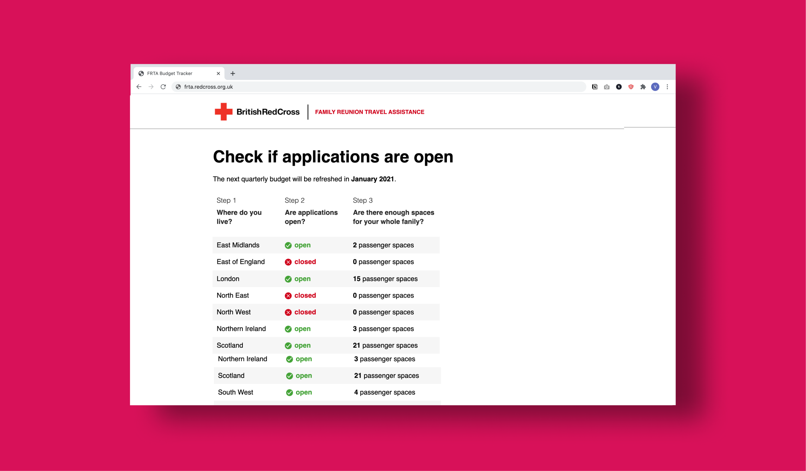
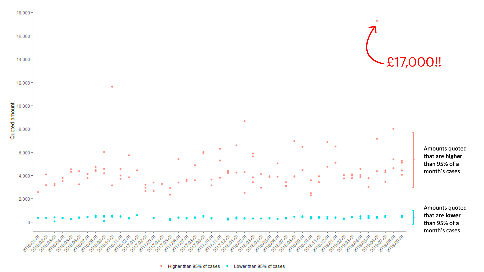
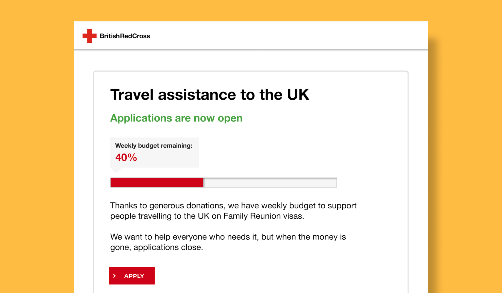
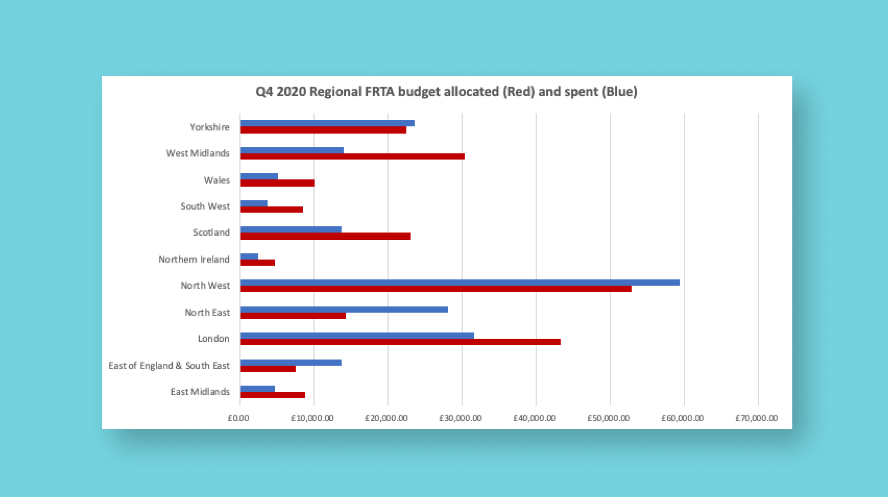
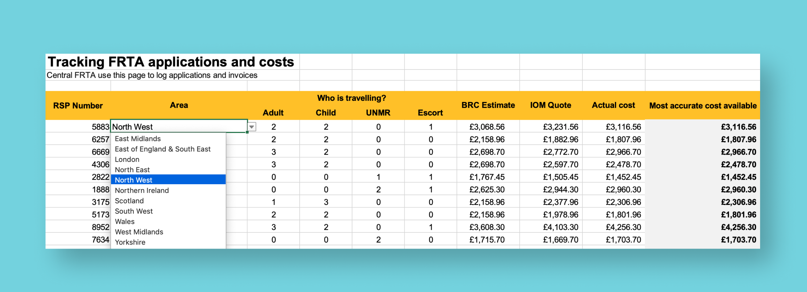
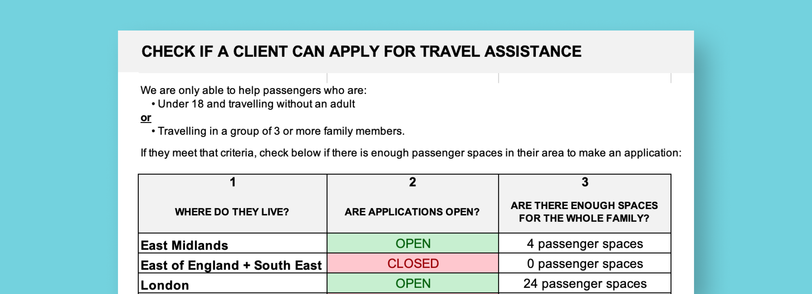

Tools to help caseworkers say "no" and manage their budget
The challenge
Help teams stay within budget while helping those most in need.
The solution
A quick-check tool for local caseworkers to check if applications are open, and a new service model to go with it.
Keep reading to hear how we got there or check out the live MVP
Context
When a family is granted with a Family Reunion visa, they have 30 days to fund, plan and travel to the UK. This is hard for most people but is impossible for refugees and asylum seekers with little travel experience or financial security.
The Family Reunion Travel Assistance (FRTA) service provides financial and practical help to prevent families losing hard-won visas or resorting to desperate measures, e.g. loan sharks.
FRTA is unfortunately so popular, though, that it dramatically exceeds its budget each year and in the current economic climate finds its budget under more scrutiny than ever.
Previous attempts to restrict the criteria and help less people didn't reduce spending and families and caseworkers were struggling to keep up to date with the changing rules.
Discovery
The original brief was to develop a more sophisticated vulnerability matrix to measure eligibility, offering a more nuanced, yet objective way for FRTA to identify and support those most in need.
The discovery phase uncovered 2 false assumptions behind this brief:
- We can be objective about who is 'vulnerable'
I ran a workshop to explore caseworkers' definition of 'vulnerable' and what questions they would ask to find that out.- There was no shared understanding of what constitutes 'vulnerable'
- Everyone needing travel assistance was 'vulnerable' in some way.

Insight
The budget would never be able to support every vulnerable applicant, forcing frontline to say "you're not vulnerable enough" to very vulnerable people. - If we restrict the criteria enough, we won't go over budget
Analysis of historic costs and application data showed you can’t reliably predict the cost of each case. The below shows the cost of cases that were 95% higher or lower than the median. Restricted criteria wouldn’t prevent a £17k case as in the top-right corner. Insight
Restricting criteria to reduce the number of eligible applications will not on its own reduce spending as each case could still cost far more than predicted.
Exploring an alternative solution
The Discovery phase revealed a core issue, a cultural one: FRTA isn’t used to saying 'No'.
To tackle this, we tested reframing the application process by tapping into a different yet commonly recognised service model: a fund, whereby applications would be accepted for as long as there was budget to support.
Hypothesis
It is fairer as well as clearer and more sensitive to applicants to base support on money available than dictate who is more vulnerable.
Prototyping through to an MVP
While there was still a need (and desire) for an eligibility checker but to test our hypothesis I designed a landing page that showed the remaining budget available to applicants.
Testing this with caseworkers was a success:
- The mental model of a finite pot of money was universally understood
- Caseworkers said this would make it easier to explain why they can’t help
- Staff really appreciated the transparency
We then tested this those not familiar with FRTA (friends, families, ex-clients), who also appreciated the transparency, understood why we were saying No and felt it seemed fair.
While this was reassuring, there were some things we would only discover by testing live as we weren’t able to test with anyone currently looking for travel assistance. Asking someone to participate in research after saying we can't help them reunite with their family is a tough ask.
Mapping the operational context
- How would we manage the budgets, nationally or locally?
- How often would we refresh the budget? (timelines are crucial for people with expiring visas)
- How would we keep track of spending so that the budget is live and up to date?
Step 1
I mapped out a service blueprint and user journey with a team of caseworkers, forcing them to think about what these changes would mean in reality.

Step 2
Having ironed out some of the operations, we shifted into an alpha phase to test these ideas for real. We first tested budget management in isolation vs. building everything.
I designed an MVP specifically for caseworkers to guide their discussions with applicants and bring clarity to their work. Working in this way meant we could drip-feed changes and test the impact on users before developing an online application process.
Building an MVP in Excel
I used Excel to make our MVP because so I could:
- Build the financial model myself and avoid waiting for development support (ratio of designers to developers was 2:1)
- Avoid alienating non-technical staff who were all relatively familiar with Excel
- Store the information in a shared place
- Password protect the sheets I didn't want others to tinker with
The MVP had 3 key functions
- Distribute budget based on historical data.
Senior and frontline staff wanted to track and adjust spending in different areas so as to distribute budget based on need. Based on testing so far, this may not be the best approach but we will review once it's been live for a while.
- Log and track applications and related spending.
The MVP calculates an estimate based on historic costs while we wait for a quote, and ultimately a final invoice. This ensures the budget is always live and up to date.
- Quick check view for caseworkers.
The front page was simplified so you could instantly check whether applications are open in a given area and, if so, how many passenger spaces remain. Caseworkers could then quickly tell an applicant if we can help or not and when to reapply.
Replacing excel with a (less intimidating) front-end
Before going live, we did some more testing and, despite our best efforts, Excel worked for the backend but not the front end for 2 reasons:
- We can't store Excel files in a quick, easy access place
- Excel phobia is a thing – some people will always flinch at the sight of a spreadsheet
Working with in-house developers for a quick fix, they managed to host the quick-check element of our sheet via Microsoft Azure. With some css magic we had a public link.
Impact and next steps
The MVP represents our alpha phase, which will run until December 2020. We will then review our impact qualitatively (with service users and staff) and quantitively (with data).
These are some of the questions we will want to answer:
- Will caseworkers say ‘No, applications have closed’ or is there more to do to change the culture?
- Were the FRTA team able to accurately track spending?
- Did we stay within budget?
- Did users understand why they had to reapply in January? Did they think it was fair
We must then review the longer-term designs and see if they are still fit for purpose. The future designs are geared towards service user facing products, rather than caseworker tools.
You can check out the Figma wireframes below to see where we are headed.
While we wait for the results of our alpha phase, one win already has been the evident appreciation of the additional financial context and understanding we sadly cannot help everyone in need.
At the very least I hope that evidence of us saying No will equip the Red Cross policy and advocacy teams to fix the broken system of Family Reunion visas in the UK. CC: Priti Patel and co.
Team
- Vicky : Service designer
- Darren : Subject matter expert
- Julio : Front-end engineer
- Ged : Back-end engineer